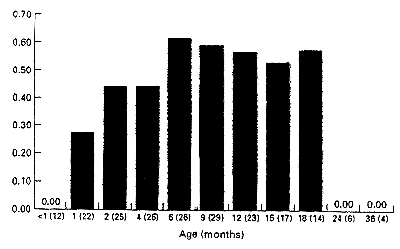
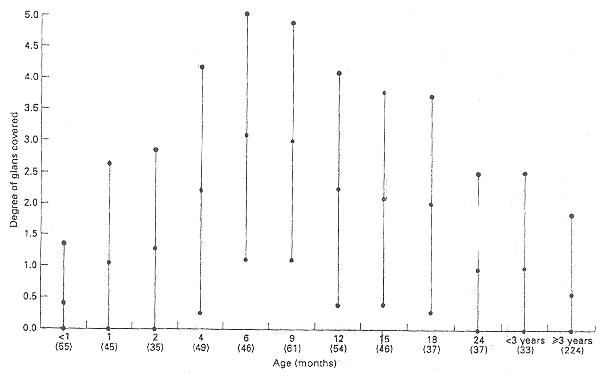

THE CIRCUMCISION REFERENCE LIBRARY
R. S. VAN HOWE
Department of Pediatrics, Marshfield Clinic, Minoqua, Wisconsin,
USA
Objective To document prospectively variation in penile morphology and clinical findings in children.
Patients and methods The study comprised a consecutive sample of 468 boys whose consultation with a physician included a genital examination in a primary care paediatric practice in rural northern Wisconsin.
Results Circumcised boys under 3 years of age were significantly more likely to have a partially or completely covered glans, a reddened meatus, balanitis, or trapped epithelial debris, and less likely to have a fully exposed glans than were circumcised boys of 3 years or older. Among the 238 boys under 3 years, those circumcised were significantly more likely to have non-cosmetic problems, including coronal adhesions, trapped epithelial debris, a reddened meatus, preputial stenosis (phimosis) and balanitis than were boys with a foreskin. Findings in the circumcised group under 3 years included: fully exposed glans (n=78, 35.6%), partially covered glans (n=67, 30.6%), adhesions (25.6%), completely covered glans (20.1%), entrapped desquamated epithelial debris (24.7%), reddened meatus (19.1%), balanitis (15.5%), and preputial stenosis (0.9%). Only two genital examinations in boys with foreskins revealed pertinent findings. Coronal adhesions develop in circumcised boys at 2-6 months of age and usually resolve by 24 months. The degree of skin covering the glans after neonatal circumcision peaks at 6 months of age.
Conclusions There are significant variations of appearance in circumcised boys; clinical findings are much more common in these boys than previously reported in retrospective studies. The circumcised penis requires more care than the intact penis during the first 3 years of life. Parents should be instructed to retract and clean any skin covering the glans in circumcised boys to prevent adhesions forming and debris for accumulating. Penile inflammation (balanitis) may be more common in circumcised boys; preputial stenosis (phimosis) affects circumcised boys and intact boys with equal frequency. The revision of circumcision for purely cosmetic reasons should be discouraged on both medical and ethical grounds.
Keywords Penis, circumcision, abnormalities, phimosis, balanitis, adhesions
Introduction
One of the most frequently cited reasons for neonatal circumcision in the USA is for a `boy to look like his father'[1]. According to past studies, between 1%[2,3] and 9.5%[4] of boys circumcised at birth will have the procedure revised or redone, and 2.8% of parents will complain of the cosmetic appearance[5]. Although the natural progression of the appearance of the normal penis has been well documented to date [6,7], no study has documented penile appearance beyond the first year of life in a mostly circumcised population. This study examines prospectively the prevalence and kinds of penile variation and clinical findings in a general paediatric practice.
Patients and methods
The study population consisted of a consecutive sample of 468 males up to 18 years old who had their genitalia examined by the author in Minocqua, Wisconsin between 1 June 1995 and 30 April 1997. These examinations included sports physical and well-child examinations, and sick visits where a genital assessment was part of a physical examination for a specific problem: 822 such genital examinations were performed. Tanner sexual maturity ratings (I-V) [8] were documented for all patients and the penis categorized as `glans fully exposed', `corona covered', `glans partially covered' and `glans completely covered' corresponding respectively to the D, C., B and A classifications described by Wynder and Licklider [9]. The descriptions were tallied by the author and Fisher's two-sided exact test used to calculate P values.
Results
Of the boys studied, 36 (7.7) had foreskins, reflecting the high incidence of neonatal circumcision in the northern Midwest USA: all but one boy was rated Tanner I. Parents commented about the penis is 27 instances: the findings in the 25 circumcised boys did not differ in type from those boys where no comment was made and three comments were made about two boys with a foreskin. Nearly all boys studied were Causcasian; only two were of Hispanic origin, one of mixed race, one black, and 30 native Americans. No differences in circumcision rates were noted between racial or ethnic groups. Most of the boys under 3 years old had been circumcised using a Plastibell or a Mogen clamp. The method used in the older boys is unknown. Only seven boys were identified as being circumcised after the newborn period.
The mean (SD) age at the time of examination differed significantly between boys with and without foreskins at 2.07 (2.94) years and 3.46 (4.64) years, respectively (Z=-4.03, P,<0.001) because there were no older boys with foreskins. Boys graded Tanner I showed no age difference and this relationship held for those >3 years and those >3 years of age.
Table 1
The number (%) of various findings in circumcised boys equal to
or greater than 3 years old by Tanner stage.
Tanner stage
------------------------------------------
I II III IV V Total
-------------------------------------------------------------------
Total 147 14 11 11 30 213
Glans
Fully exposed 96(65) 9 9 11 29(97) 155(73)
Partially covered 20(14) 2 22(10)
Completely covered 9(6) 1 1 11(5.2)
Corona covered 21(14) 3 24(11)
Reddened meatus 1(0.7) 1 2(0.9)
Meatal stenosis 12(8) 12(5.6)
Coronal adhesions 3(2) 3(1.4)
Skin bridge 1(0.7) 1(0.5)
Balanitis 5(3) 1 6(2.8)
Hygiene-related 5(3) 1 1 7(3.3)
Non-cosmetic 20(14) 1 1 22(10)
|
Of the 230 boys aged 3 years and over, 213 (92.6%) were circumcised; of these circumcised boys, 72.8% had a fully exposed glans. Findings in circumcised boys by Tanner stage are listed in Table 1; of 163 who were Tanner I had mild preputial stenosis, which may have been iatrogenically induced.
Of the 238 boys under 3 years of age, 219 (92.0%) were circumcised. Within this group, the circumcised boys underwent significantly fewer genital examinations at 4.32 (3.07) and 2.31 (1.76), respectively (Z=2.77, P<0.01). Of the circumcised boys, only 35.6% had a fully exposed glans (Table 2). The glans could be adequately exposed with gentle retraction in all circumcised boys with a partially or completely covered glans, except for the two boys with preputial stenosis.
Table 2
The distribution of various findings in circumcised boys <3 years
of ages compared with those in boys <3 years old and uncircumcised.
-----------------------------------------------------------------------
Number(%) P value*
Total 219(92.6)
Glans fully exposed 78(35.6)
Glans partially covered 67(30.6)
Debris present between skin and glans 54(24.7) 0.084
Adhesions without bridge 56(25.6) 0.009
Glans completely covered 44(20.1)
Red meatus 42(19.1) 0.030
Balanitis 34(15.5) 0.323
Corona covered 30(13.7)
Skin bridge/tunnel 9(4.1) 1.00
Crooked 9(4.1) 1.00
Preputial stenosis 2(0.9) 1.00
Metal stenosis 1(0.5) 1.00
Non-cosmetic penile finding+ 119(54.3) <0.001
Hygiene related++ 98(44.7) <0.001
All adhesions 65(29.7) 0.002
----------------------------------------------------------------------
*Fisher' two-sided exact test, comparing boys <3 years of age with a
foreskin. +Includes adhesions, skin bridges, preputial stenosis,
subpreputial debris, balanitis, or a reddened meatus (some patients
had more than one). ++Includes sub-preputial debris, red meatus, or
balanitis.
|
When compared with Tanner I circumcised boys >3 years old, the circumcised boys were more likely to have a partially covered glans, a completely covered glans, a reddened meatus, coronal adhesions, skin bridges, balanitis and trapped epithelial debris. This group was less likely to have a fully exposed glans, meatal stenosis, or dysuria. (Table 3).
Table 3
Comparison between circumcised boys less than 3 years old and
Tanner stage I circumcised boys equal to or greater than 3 years.
-------------------------------------------------------------------
Odds ratio (95%CI)* P value+
Glans
Partially covered 2.80 (1.61-4.86)
Completely covered 3.86 (1.82-8.17)
Fully exposed 0.29 (0.19-0.46)
Reddened meatus 34.64 (4.71-254.78) <0.001
Coronal adhesions 16.49 (5.05-53.83) <0.001
Balanitis 5.21 (1.99-13.69) <0.001
Corona
Covered 0.95 (0.52-1.74)
Fully exposed or covered 0.25 (0.15-0.40)
Skin bridge 6.25 (0.78-49.92) 0.055
Meatal stenosis 0.05 (0.15-0.40)
Subpreputial debris 41.78 (6.53-349-75) <0.001
Dysuria 0.04 (0.01-0.34) <0.001
Preputial stenosis 0.518
Crooked 0.013
*The higher values mean a boy <3 years old is more likely to have the
finding. A value <1.00 meas a boy equal to or greater than 3 years is
more likely to have the finding. +Fishers two-sided exact test used
when equal to or greater than 5 boys were affected.
|
When circumcised boys and uncircumcised boys <3 years old were compared (Table 2), the former were more likely to have a non-cosmetic penile problem (either adhesions, a skin bridge, trapped epithelial debris, preputial stenosis, or balanitis), a finding associated with hygienic practices (either sub-preputial debris, reddened meatus, or balanitis; P=0.001); coronal adhesions or bridges (P=0.002), trapped epithelial debris, or meatitis. These findings were also present when all circumcised and uncircumcised Tanner I boys were compared, except the finding of trapped epithelial debris was statistically significant (P=0.043). Non-cosmetic findings were markedly more common in Tanner I circumcised boys than those with a foreskin, with an odds ratio (OR; 95%CI) of 10.22 (2.41-43.26), but the rate of preputial stenosis was not statistically different, at 0.18 (0.01-2.11; P=0.240). For circumcised boys <3 years of age, there was significant correlation between coronal adhesions and a glans that was partially or completely covered (5.03, 2.51-10.13), sub-preputial debris and a partially covered glans (3.12, 1.65-5.93), partially covered glans and non-cosmetic findings (2.37, 129-4.35), partially covered glans and hygiene-related findings (2.40, 1.33-4.32), coronal adhesions and sub-preputial debris (7.35, 3.75-14.45), balanitis and reddened meatus (2.38, 105-5.37), and coronal adhesions and hygiene related findings. (3.88, 2.10-7.19). Patients with non-cosmetic findings were likely to have more genital examinations than those that did not. Boys with a fully exposed glans had fewer genital examinations, with a mean (sd) of 1.58 (1.12) versus 2.72 (1.92) (Z = -5.45, P<0.001) and were less likely to have sub-preputial debris (OR 0.02, 0 - 0.16), non-cosmetic findings (.18, 0.10-0.33), or hygiene-related findings (0.31, 0.17-0.56).
In circumcised boys <3 years of age with adhesions, the mean age at which this observation was made (105 examinations) was 8.65 (5.20) months. Fifty-one circumcised boys with coronal adhesions or skin bridges underwent more than one examination. The percentage of these 51 boys with adhesions at different ages is shown in Fig. 1; there was a pattern of developing adhesions at 2-6 months of age. Most of the adhesions had resolved by 24 months of age after parents were instructed to regularly apply gentle retraction on the adhesion. The degree of penile skin covering the glans is shown in Fig. 2. On average, the glans was covered most at 6 months and there was a gradual increase in glans exposure after 6 months.
Discussion
To date, there has been only one published study examining the range of penile appearance in infant boys circumcised shortly after birth [10] and three of the incidence of `penile problems' and `later complications' in young boys [2,5,11]. Unlike Fergusson et al., who used a retrospective chart review over an 8-year span to estimate the incidence of `penile problems' based on patient of parental complaint [5], the present study examined prospectively each boy whose presentation necessitated a genital examination; parental comments or complaints were sparse. Fergusson et al., relying on parental comments, retrospectively found only 16% of circumcised boys up to 8 years old with `penile problems'. By contrast the present study documented non-cosmetic penile problems in 42.9% of circumcised boys up to age 8 years. Parental complaints in this study would only have identified 14.2% of the penile findings in boys <3 years old. In keeping with Fergusson et al., more non-cosmetic penile findings in circumcised boys were found in the early years of life. However, when comparing the findings in boys with foreskins, Fergusson et al. documented more total `penile problems' (P=0.043) than the present study. Despite a similar study design, significantly more later complications than the 13% found in the study by Metcalf et al. [2] were documented in the present study. No `complications' were seen in the study by Metcalf et al. among boys who had foreskins.
| Fig 1 Progression of coronal adhesions and skin bridges with age. The number of examinations at each age is shown in parentheses. The only statistical significant change was from 1 to 2 months. (P<0.05) |  |
|  Fig. 2 Glans covering by age. The scoring was: 0, fully exposed glans; 1, Corona covered; 2, 25-33 of glans covered: 3, 50% covered; 4, 66-75% covered; 5, glans completely covered. The number of patients at each age is shown in parentheses (Z= -2.12) and 18 and 24 months (Z= -2.72) and all significant (P<0.05). |
The retrospective study of penile complaints by Herzog and Alvarez [11] suggested that the total frequency of complications was significantly higher in boys with foreskins. Unfortunately, these authors failed to control for ethnicity; Hispanic boys were more likely to have penile complaints whether they had a foreskin (OR 2.56, 1.03-6.38) or not (3.46, 1.19-10.07). When controlled for ethnicity, neither Hispanic boys with foreskins (1.31, 0.51-3.36) nor non-Hispanic boys with foreskins (1.78, 0.62-5.05) had a significant increase in complications. The overall finding resulted form Hispanic boys constituting 67% of those with foreskins and only 16% of the circumcised group, rather than the presence or absence of a prepuce.
Compared with the circumcised boys examined by Herzog and Alvarez, the circumcised boys in the present study were more likely to have balanitis, adhesions, or a `complication'. Comparing the boys with foreskins in the two studies, Herzog and Alvarez found more `total complications' (P=0.195), but the difference was not statistically significant.
The cosmetic results of circumcision documented here are similar to those reported by Patel [10]. In that study of 100 infant boys, half had their glans partially or completely covered by skin. Patel also reported meatal ulcers in 31 of the boys and meatal stenosis in eight. Post-circumcision phimosis was seen in one boy [10].
The high degree of variability in appearance could not be related to the technique used or the physician using it. When operating on the infantile penis, the surgeon cannot adequately judge the appropriate amount of tissue to remove because the penis will change considerably as the child ages, such that a small difference at the time of surgery may translate into a large difference in the adult circumcised penis. To date, there have been no published studies showing the ability of a circumciser to predict the later appearance of the penis.
One fifth of circumcised boys aged <3 years in this study had a completely covered glans. It is unclear how many had a buried penis as this was not specifically investigated. Buried penis is a congenital deformity that is often not recognized in the neonatal period; circumcision of these boys can result in serious complications[12]. If the penis is small, any surgery should be deferred until it can be clearly shown that it is not a buried penis. Additional, several boys presenting for `recircumcision' may have a buried penis. Attempting to recircumcised these boys often makes the condition worse and reconstruction more problematic [12]. Little [13] suggested letting the child grow out of the problem without surgical intervention. When parents request revisional surgery [14,15] the surgeon confronts four dilemmas; first, it is impossible to predict how the penis will look after puberty in a pre-pubescent child; second, once skin is taken off, it is hard to replace. If too much skin is taken off, there may not be enough skin for the penis to become erect in adulthood without pain, skin tears, or pubic hair being pulled up onto the base of the penis [16]; third, an infant's circumcised penis that is covered with skin may represent a `hidden' penis, in which case standard circumcision revisional techniques [14] could make the situation worse [12]; and finally, it is not clear in the light of the recent statement by the American Academy of Pediatrics Committee on Bioethics whether a surgeon can obtain informed consent, parental assent, or informed parental permission for cosmetic surgery in a pre-verbal child [17]. Even if the surgeon is prudent and refuses to perform the surgery, many parents in the USA will pursue subsequent consultations with other surgeons until they find one willing to perform the procedure [18].
If after circumcision the raw areas of the penile skin or remaining preputial tissue are in contact with the denuded glans, adhesions may occur. The 29.7% of boys <3 years old with adhesions or skin bridges emphasizes the importance of continuing penile care in the circumcised infant. Gracely-Kilgore [20] found that 15% of circumcised boys on their first visit had coronal adhesions and the present study produced similar findings in initial visits of circumcised boys <3 years of age. This study confirms that adhesions are not residual areas of embryonic adhesions that were not lysed adequately during circumcision, as had been reported previously.
While the infant with a normal prepuce requires no special care [23,24] the circumcised boy needs to have any skin overlying the glans pulled back and cleaned regularly until 15-18 months of age, to prevent adhesions to the glans from reforming and debris from accumulating [20,21,25,26]. The connections between the inner lining of the prepuce and the surface of the glans dissolve over time. Forceful tearing of these connections which increases the possibility of infection, bleeding, and scar formation, has not been shown to be more effective than gentle daily retraction.
Most paediatricians, the author included, often mis-label balanitis as `candidal diaper rash' when the circumcision scar and glans are the focus of the infection. In a large retrospective study, the incidence of balanitis in circumcised and uncircumcised boys did not differ significantly [11]. Balanitis or irritation was documented in 4% of circumcised boys up to age 12, compared with 10.4% in the present study. The retrospective nature of the study, coupled with mislabelling, may be responsible for underestimating the incidence in circumcised boys.
In a prospective study, nine (1.6%) of 565 intact Japanese boys <10 years old had balanitis [7]; in the present study, 20 (5.6%) of 357 boys <10 years old were recorded as having balanitis at their initial examination. Although the value of comparing prospective data from different studies is limited, it appears that circumcised boys <10 years old are more likely to develop balanitis than are normal boys (OR 3.81, 95%CI 1.73-8.53). While inflammation of the penis may occur more frequently in circumcised boys, balanoposthitis in the normal penis may be more painful because of the nerve-endings sensitive to fine touch in the prepuce [27]. Most of these cases, regardless of circumcision status can be treated successfully with topical therapy.
Two patients were noted to have preputial stenosis secondary to scarring from their neonatal circumcision, which did not allow retraction of residual skin over the glans. Incidences of 0.32% [28], 0.4% [11] and 1% [10] have been reported for preputial stenosis resulting from neonatal circumcision. While the exact incidence of preputial stenosis is unknown, it is most likely between 0.9% [29] and 1.9% [7]. The prospective Japanese study found only four 1.9% intact boys under age 2 years (n=213) had a `pinhole' prepuce' [7]. This does not differ significantly from the rate of preputial stenosis seen in circumcised boys <2 years old in the present study (P=0.444), suggesting that preputial stenosis, often referred to as `phimosis' may affect both circumcised and intact boys with equal frequency.
The common finding of sub-preputial debris in circumcised infants may reflect inadequate hygiene; the debris found consisted of lint, dirt, talc, stool and detritus. The association between subpreputial debris and coronal adhesions implicates poor hygiene as a possible cause. In the normal penis, muscle fibres are arranged in a whorl to form a sphincter that keeps unwanted contaminants out [30]. Urine swirling under the prepuce in the normal infant male flushes any contaminants from the subpreputial space [31] and may explain the paucity of findings in this population. Subpreputial debris may have been under-reported in young intact boys because forcible retraction of the foreskin, which is a harmful practice [23], was not performed.
The present findings highlight the importance of assuring parents about their child's penile appearance. Parents who elect to have their boys circumcised for cosmetic reasons may be disappointed by the wide variability documented here. As physicians, we may have a moral obligation to steer parents away from unnecessary and costly circumcision revision until the child is old enough to consent to the procedure.
One of the weaknesses of previous studies was their reliance on parental comment as the sole inclusion criterion. It is difficult to measure the prevalence of parental dissatisfaction. The scarcity of comments may reflect the lack of a clear notion of how the circumcised penis should appear. In the USA, there is general ignorance among parents and physicians about the appearance and function of the normal penis, let alone that which is surgically altered. The lack of comment may also reflect a society that is accustomed to seeing a wide variety of surgical altered penises. The greatest weakness of the present study was the relatively few boys with foreskins, which limited the power of the statistical analysis. These boys received more genital examinations, which would tend to over-represent the number of penile findings.
In conclusion, there is a wide penile variation in young circumcised boys: penile findings among these boys are much more common than previously reported in retrospective studies. Practitioners need to be familiar with the prevalences of these findings to give accurate information to parents. When discussing the advantages and disadvantages of neonatal circumcision, parents need to know that the circumcised infant requires more attention and penile hygiene than the uncircumcised infant; circumcision does not prevent phimosis and circumcised boys are more likely to develop balanitis, meatitis, coronal adhesions and meatal stenosis.
Acknowledgements
I am indebted to Cynthia J. Musser, MS, for her assistance in calculating the Fisher's two-sided exact test P-values.
References
Author
R.S. Van Howe, MD, FAAP, Clinical Instructor, Marshfield
Clinic,
Lakeland Center, 9601 Townline Road, P. O. Box 1390,
Minocqua,
Wisconsin, USA.
Accepted for publication 16 July 1997
Copyright 1997 British Journal of Urology
http://www.cirp.org/library/complications/vanhowe/